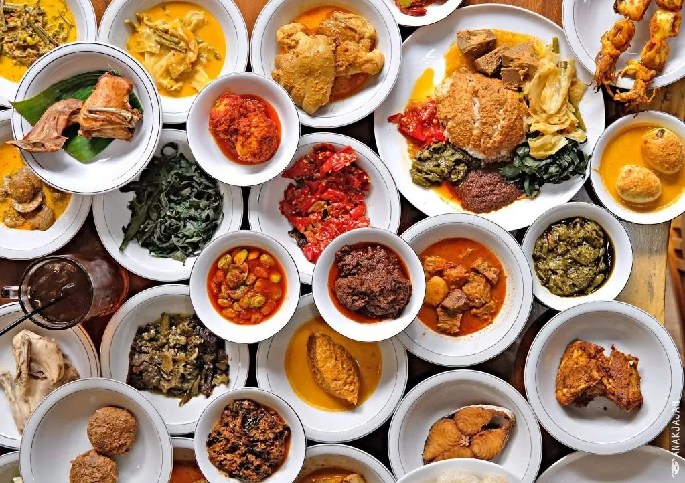
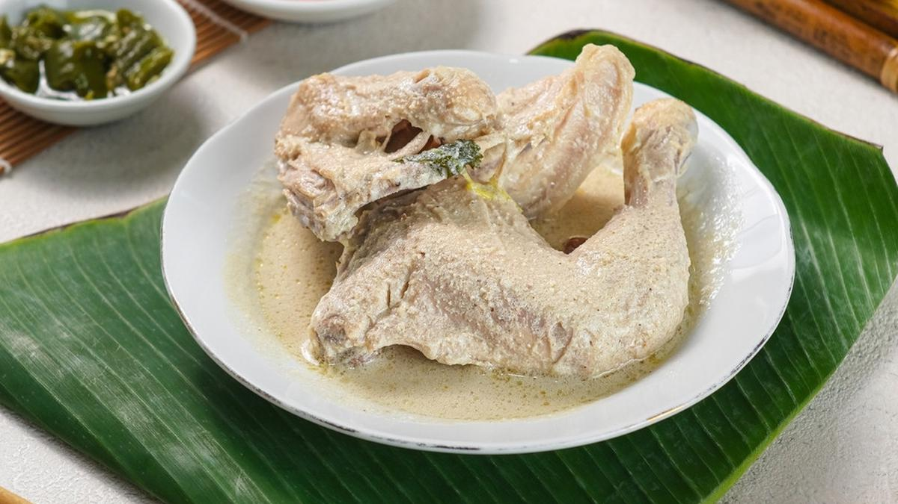
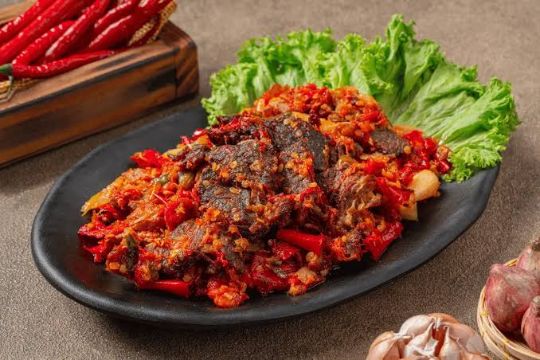

01
Bumbu Rempah Asli
Cabai, kunyit, lengkuas, jahe, dan serai diolah sendiri tanpa bumbu instan untuk cita rasa yang autentik.
Rumah Makan Padang Ranah Minang menyajikan rendang, gulai, ayam pop, dan aneka lauk khas Sumatera Barat dengan bumbu rempah pilihan yang dimasak segar setiap hari.

Setiap masakan kami dibuat dengan resep keluarga, santan segar, dan rempah asli Minangkabau agar rasa gurih dan pedasnya tetap terjaga.
Cabai, kunyit, lengkuas, jahe, dan serai diolah sendiri tanpa bumbu instan untuk cita rasa yang autentik.
Lauk dimasak setiap pagi dari bahan segar pilihan, sehingga selalu hangat saat disajikan.
Nasi hangat dengan pilihan lauk lengkap, sambal hijau, daun singkong, dan kuah gulai yang kaya rasa.

Daging sapi empuk dimasak berjam-jam dengan santan dan rempah hingga bumbunya meresap.

Ayam kampung rebus bumbu lembut dengan sambal tomat pedas segar yang menjadi pendampingnya.

Irisan daging tipis yang digoreng garing dan disiram sambal balado cabai merah.
Pesan nasi bungkus, catering acara, atau reservasi meja untuk makan bersama keluarga. Buka setiap hari pukul 08.00 - 21.00.